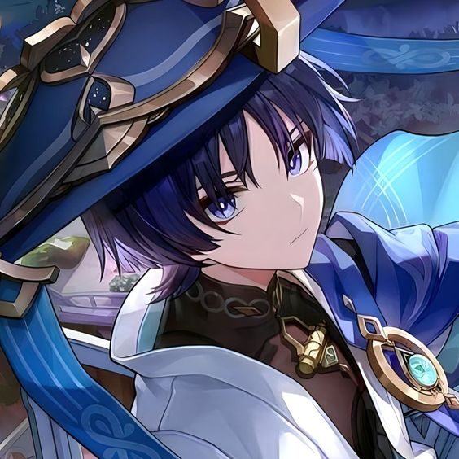
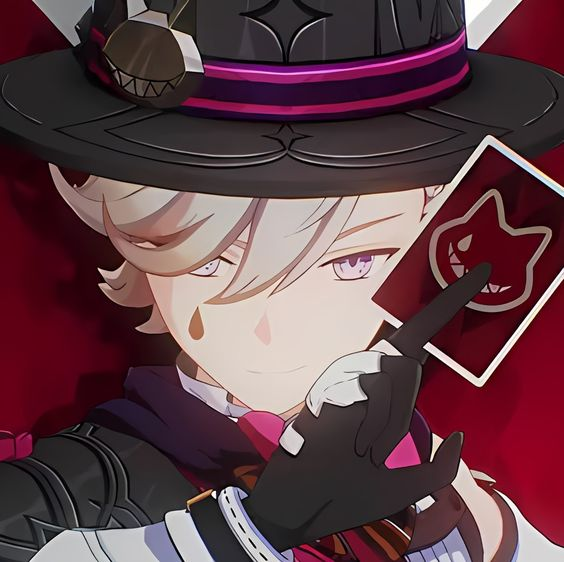

Kazuha
Kazuha is a five star wind character in the game "Genshin Impact" and a ronin samurai who was born in Inazuma(Japan).Kazuha is a humble person with a gentle personality.There are many past events buried under the young and chic appearance.Seems casual, but has his own rules of conduct in his heart.
When his friend died fighting against the gods, he went to a foreign country alone to find help, and returned to his hometown with the friends he met along the way to confront the gods, and successfully made the tyrannical gods change their minds and reorganize the country.Lastly, make the country better.

Scaramouche
Scaramouche is a prototype doll made by Baalzebul, the god of thunder in "The Seven Archons of Earth". Originally born as a container for the "Heart of God", it shed tears in its sleep. Balzebul had no choice but to realize that he was too fragile, both as an instrument and as a human being. The creator couldn't bear to destroy him, so he let him continue to sleep. Later, he woke up due to an unknown mistake and began to walk between heaven and earth and mortals.Because of some tragedy, he vowed to become stronger. After being induced by the "Doctor", he joined Fatui and became an executive. Then, he learning the facts, he went to World Tree to delete everyone's memories of him and start over. He changed his name to Wanderer.

Lyney
Lyney, a character in the game "Genshin Impact", a talented magician famous in Fontaine.He claiming to be "The Best Magician in all of Teyvat",touching the hearts of the audience with exquisite techniques and words.Sharp-tongued, superb acting skills, and as hard to guess as a cat's thoughts.
It is because he is a new character, there is very little description of him in the game. We have just met him in the game, but Lyney’s life-threatening accident occurred during a surprising magic show, which led to an unsolved case from many years ago. I was attracted by the excitement of the story, and I am a big fan of "Detective Conan". Naturally, I was curious about Lyney’s identity, and because of his personality, I fell in love with this character.
Introduction for Genshin Impact Character
Back to TOP